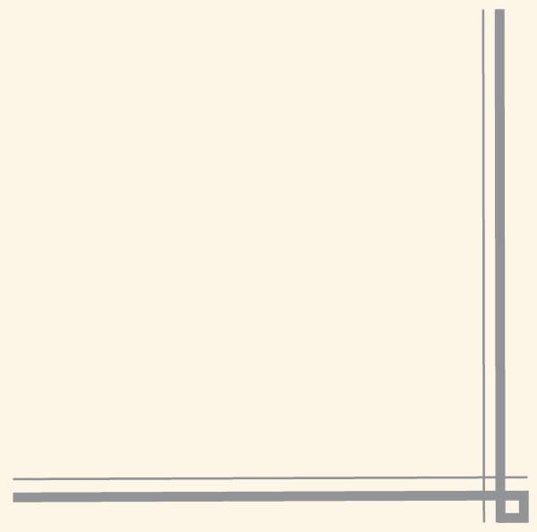
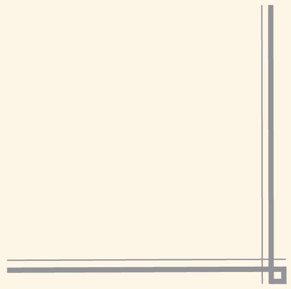

Календарь знаменательных дат
2018-2027 гг. – Десятилетие детства в России, указ Президента от 29.05.2017
24 июня 2014 г. Президент России В.В. Путин подписал указ «в целях сохранения военно-исторического и культурного наследия, укрепления единства российского народа» о праздновании в 2021 году 800-летия со дня рождения Александра Невского.
Юбилейные даты 2021 года:
800 лет со времени рождения русского князя, полководца Александра Невского (ок. 1221-1263)
570 лет со дня рождения Христофора Колумба (1451-1506), испанского мореплавателя
435 лет со времени изготовления «Царь-пушки» А. Чоховым (1586). Установлена в Моcковском Кремле
310 лет со времени изобретения фортепьяно Б. Кристофори (1711)
290 лет со времени создания Тихоокеанского флота России (1731)
190 лет со времени создания Румянцевского музея (1831)
155 лет со времени основания Русского телеграфного агентства (1866)
145 лет со времени изобретения первого телефонного аппарата А.Г. Беллом (1876)
95 лет со времени основания издательства «Советская энциклопедия» (1926), с 2004 года – «Большая Российская энциклопедия»
80 лет со времени появления системы полевой реактивной артиллерии «Катюша» (1941)
60 лет со времени завершения строительства Государственного Кремлёвского дворца (1961)
| Январь | |
|---|---|
| День | Знаменательная дата |
| 1 января |
Новогодний праздник День былинного богатыря Ильи Муромца |
| 3 января |
85 лет со дня рождения Николая Михайловича Рубцова (1936-1971), поэта 280 лет назад (1741) указом императрицы Елизаветы Петровны в России официально был признан буддизм |
| 6 января | 110 лет со дня рождения Николая Афанасьевича Крючкова (1911-1994), советского киноактёра |
| 7 января |
Рождество Христово 110 лет со дня рождения Марии Владимировны Мироновой (1911-1997), актрисы |
| 8 января | День детского кино |
| 11 января | День заповедников и национальных парков |
| 12 января |
145 лет со дня рождения Джека Лондона (Джона Гриффита, 1876-1916), американского писателя 85 лет со дня рождения Раймонда (Раймондаса) Вольдемара Паулса (1936), латышского композитора, дирижёра, пианиста |
| 13 января |
День российской печати 90 лет со дня рождения Аркадия Александровича Вайнера (1931-2005), писателя и сценариста |
| 14 января | 110 лет со дня рождения Анатолия Наумовича Рыбакова (1911-1998), писателя |
| 15 января | 130 лет со дня рождения Осипа Эмильевича Мандельштама (1891-1938), поэта, прозаика, переводчика и критика |
| 24 января | 245 лет со дня рождения Эрнста Теодора Амадея Гофмана (1776-1822), немецкого писателя, композитора, художника |
| 25 января |
День российского студенчества. Татьянин день 75 лет со дня рождения Вячеслава Добрынина (1946), певца и композитора |
| 27 января |
День полного снятия блокады города Ленинграда (1944) 195 лет со дня рождения Михаила Евграфовича Салтыкова-Щедрина (Салтыкова, 1826-1889), писателя, журналиста 130 лет со дня рождения Ильи Григорьевича Эренбурга (1891-1967), писателя, поэта, журналиста и переводчика |
| 28 января | 180 лет со дня рождения Василия Осиповича Ключевского (1841-1911), историка, профессора, академика |
| 29 января | 155 лет со дня рождения Ромена Роллана (1866-1944), французского писателя, драматурга |
| Февраль | |
|---|---|
| День | Знаменательная дата |
| 1 февраля | 90 лет со дня рождения Бориса Николаевича Ельцина (1931-2007), российского государственного деятеля |
| 2 февраля | День разгрома советскими войсками немецко-фашистских войск в Сталинградской битве (1943) |
| 3 февраля |
55 лет со дня первой в мире посадки автоматической станции на Луну (1966) 130 лет со дня рождения Сергея Владимировича Обручева (1891-1965), геолога |
| 4 февраля | 140 лет со дня рождения Климента Ефремовича Ворошилова (1881-1969), государственного деятеля, первого маршала Советского Союза |
| 5 февраля |
185 лет со дня рождения Николая Александровича Добролюбова (1836-1861), литературного критика, поэта, публициста 170 лет со дня рождения Ивана Дмитриевича Сытина (1851-1934), предпринимателя, крупнейшего русского издателя, книготорговца |
| 7 февраля | 175 лет со дня рождения Владимира Егоровича Маковского (1846-1920), художника-передвижника, графика и педагога |
| 8 февраля | День памяти юного героя-антифашиста |
| 9 февраля | 580 лет со дня рождения Алишара Навои (наст. имя Низамаддин Мир Алишер, 1441-1501), среднеазиатского поэта, государственного деятеля |
| 10 февраля | День памяти А.С. Пушкина (1799-1837), 184 года со дня смерти |
| 13 февраля | 140 лет со дня рождения Элинор Фарджон (1881-1965), английской детской писательницы, лауреата международной премии им. Х.К. Андерсена (1956) |
| 14 февраля | День Святого Валентина. День влюблённых |
| 15 февраля | День вывода советских войск из Афганистана (1989) |
| 16 февраля | 190 лет со дня рождения Николая Семёновича Лескова (1831-1895), писателя, публициста |
| 17 февраля |
115 лет со дня рождения Агнии Львовны Барто (1906-1981), детской поэтесса, писательницы, киносценариста 165 лет со дня рождения Рони Старшего (Жозефа Анри Боэкса, 1856-1940), французского писателя |
| 19 февраля | 65 лет со дня рождения Олега Григорьевича Митяева (1956), российского автора и исполнителя песен |
| 23 февраля |
День защитника Отечества 200 лет со дня рождения Алексея Михайловича Жемчужникова (1821-1908), поэта, сатирика, создателя образа Козьмы Пруткова |
| 24 февраля | 235 лет со дня рождения Вильгельма Гримма (1786-1859), немецкого филолога, писателя |
| 25 февраля | 180 лет со дня рождения Пьера Огюста Ренуара (1841-1919), французского живописца, графика и скульптора |
| 27 февраля | 190 лет со дня рождения Николая Николаевича Ге (1831-1894), художника-живописца |
| Март | |
|---|---|
| День | Знаменательная дата |
| 1 марта | Всемирный день кошек |
| 2 марта | 90 лет со дня рождения Михаила Сергеевича Горбачёва (1931), государственного и общественного деятеля |
| 3 марта | Всемирный день писателя |
| 7 марта | 1700 лет со дня объявления воскресенья нерабочим днём (самый древний указ императора Константина Великого), (321 г.) |
| 8 марта |
Международный женский день 115 лет со дня рождения Александра Артуровича Роу (1906-1973), кинорежиссёра 80 лет со дня рождения Андрея Александровича Миронова (1941-1987), актёра |
| 8-14 марта | Широкая Масленица |
| 10 марта | 95 лет со дня рождения Александра Сергеевича Зацепина (1926), композитора |
| 14 марта | 135 лет со дня рождения Владимира Андреевича Фаворского (1886-1964), графика, художника, сценографа и педагога |
| 15 марта | Всемирный день прав потребителя |
| 17 марта | 165 лет со дня рождения Михаила Александровича Врубеля (1856-1910), художника, графика и скульптора |
| 21 марта |
Всемирный день поэзии (с 1999 г.) Всемирный день Земли |
| 22 марта | Всемирный день водных ресурсов |
| 23 марта |
200 лет со дня рождения Алексея Феофилактовича Писемского (1821-1881), русского писателя 115 лет со дня рождения Клавдии Ивановны Шульженко (1906-1984), певицы |
| 25 марта | 150 лет со дня рождения Игоря Эммануиловича Грабаря (1871-1960), художника, искусствоведа, реставратора |
| 26 марта | 110 лет со дня рождения Теннесси Уильямса (1911-1983), американского драматурга, прозаика |
| 27 марта |
Международный день театра 140 лет со дня рождения Аркадия Тимофеевича Аверченко (1881-1925), писателя, сатирика 150 лет со дня рождения Генриха Манна (1871-1950), немецкого писателя, общественного деятеля 110 лет со дня рождения Вероники Михайловны Тушновой (1911-1965), поэтессы и переводчицы |
| 28 марта | 245 лет со дня основания Большого театра (1776) |
| 29 марта | 85 лет со дня рождения Станислава Сергеевича Говорухина (1936-2018), кинорежиссёра, сценариста, продюсера и общественного деятеля |
| 30 марта |
275 лет со дня рождения Франсиско Гойи (1746-1828), испанского художника и гравёра 245 лет со дня рождения Василия Андреевича Тропинина (1776-1857), художника-портретиста |
| 31 марта |
425 лет со дня рождения Рене Декарта (1596-1650), французского учёного, философа 95 лет со дня рождения Джона Робертса Фаулза (1926-2005), британского писателя-романиста, эссеиста |
| Апрель | |
|---|---|
| День | Знаменательная дата |
| 1 апреля |
День смеха 590 лет со дня рождения Франсуа Вийона (1 апреля 1431 или 19 апреля 1432), французского поэта |
| 2 апреля |
День геолога Международный день детской книги |
| 6 апреля | 185 лет со дня рождения Николая Васильевича Склифосовского (1836-1904), учёного, хирурга |
| 7 апреля | Всемирный день здоровья |
| 9 апреля | 200 лет со дня рождения Шарля Бодлера (1821-1867), французского поэта, критика и переводчика |
| 11 апреля | Международный день освобождения узников фашистских концлагерей |
| 12 апреля | Всемирный день авиации и космонавтики. 60 лет со дня первого полёта человека в космос (1961), (отмечается ЮНЕСКО) |
| 15 апреля | 135 лет со дня рождения Николая Степановича Гумилёва (1886-1921), поэта, прозаика и переводчика |
| 18 апреля |
День воинской славы России. День победы русских воинов князя Александра Невского над немецкими рыцарями в битве на Чудском озере (Ледовое побоище, 1242) Международный день памятников и исторических мест |
| 19 апреля | 110 лет со дня рождения Георгия Мокеевича Маркова (1911-1991), писателя, сценариста, драматурга и журналиста |
| 21 апреля |
День местного самоуправления 205 лет со дня рождения Шарлоты Бронте (1816-1855), английской писательницы 95 лет со дня рождения Елизаветы II Виндзор (1926), английской королевы |
| 22 апреля | День Земли |
| 23 апреля | Всемирный день книги и защиты авторского права |
| 27 апреля |
Всемирный день породнённых городов 230 лет со дня рождения Сэмюэля Морзе (1791-1872), американского изобретателя, художника 130 лет со дня рождения Сергея Сергеевича Прокофьева (1891-1953), композитора, пианиста и дирижёра |
| 29 апреля | Международный день танца |
| Май | |
|---|---|
| День | Знаменательная дата |
| 125 лет со дня первого киносеанса в России (Петербург, 1896) | |
| 1 мая | День весны и труда |
| 2 мая |
Православная Пасха. Воскресение Христово 160 лет со дня рождения Василия Васильевича Розанова (1856-1919), писателя, философа |
| 3 мая |
Международный день свободы прессы День Солнца 70 лет со дня рождения Татьяны Никитичны Толстой (1951), писательницы, телеведущей и публициста |
| 4 мая | 140 лет со дня рождения Александра Фёдоровича Керенского (1881-1970), политика, государственного деятеля |
| 6 мая | 165 лет со дня рождения Зигмунда Фрейда (1856-1939), австрийского психолога, психиатра и невролога |
| 7 мая |
День радио 160 лет со дня рождения Рабиндраната Тагора (1861-1941), индийского писателя, поэта, композитора и художника (отмечается ЮНЕСКО) |
| 9 мая | День Победы в Великой Отечественной войне |
| 15 мая |
Международный день семьи 130 лет со дня рождения Михаила Афанасьевича Булгакова (1891-1940), писателя, драматурга, театрального режиссёра и актёра |
| 18 мая | Международный день музеев |
| 20 мая |
110 лет со дня рождения Анны Марии Гертруды Шмидт (1911-1995), нидерландской писательницы, поэта, лауреата Международной премии Х.К. Андерсена (1988) 65 лет со дня рождения Григория Шалвовича Чхартишвили (Бориса Акунина, 1956), писателя, литературоведа, переводчика и общественного деятеля |
| 21 мая |
550 лет со дня рождения Альбрехта Дюрера (1471-1528), немецкого художника, гравёра и графика 100 лет со дня рождения Андрея Дмитриевича Сахарова (1921-1989), физика, общественного деятеля и правозащитника |
| 24 мая |
День славянской письменности и культуры 335 лет со дня рождения Габриеля Даниеля Фаренгейта (1686-1736), немецкого физика |
| 27 мая | Общероссийский день библиотек |
| 28 мая | 135 лет со дня рождения Владислава Фелициановича Ходасевича (1886-1939), поэта, переводчика, пушкиниста, историка литературы и критика |
| 30 мая | 175 лет со дня рождения Петера Карла Густавовича Фаберже (1846-1920), ювелира |
| Июнь | |
|---|---|
| День | Знаменательная дата |
| 1 июня | Международный день защиты детей |
| 4 июня |
Международный день невинных детей – жертв агрессии 200 лет со дня рождения Аполлона Николаевича Майкова (1821-1897), поэта |
| 5 июня | Всемирный день окружающей среды |
| 6 июня |
Пушкинский день России. 222 года со дня рождения русского поэта и писателя А.С. Пушкина (1799-1837) День русского языка (Отмечается ООН) |
| 8 июня |
День социального работника 95 лет со дня рождения Олега Васильевича Кошевого (1926-1943), руководителя подпольной организации «Молодая гвардия» в фашистском тылу |
| 9 июня | Международный день друзей (неофициальный) |
| 12 июня | День России |
| 14 июня |
210 лет со дня рождения Гарриэт Бичер-Стоу (1811-1896), американской писательницы 130 лет со дня рождения Александра Мелентьевича Волкова (1891-1977), писателя, драматурга, переводчика и педагога |
| 15 июня | 85 лет со дня рождения Михаила Михайловича Державина (1936-2018), актёра театра и кино, телеведущего |
| 17 июня | 110 лет со дня рождения Виктора Платоновича Некрасова (1911-1987), писателя |
| 19 июня | 235 лет со дня рождения Фёдора Николаевича Глинки (1786-1880), поэта, писателя, декабриста |
| 20 июня | 100 лет со дня рождения Анатолия Марковича Маркуши (1921-2005), писателя, лётчика-истребителя |
| 22 июня |
День памяти и скорби 165 лет со дня рождения Генри Райдера Хаггарта (1856-1925), английского писателя |
| 23 июня | Международный Олимпийский день |
| 26 июня | Международный день борьбы с наркоманией |
| 27 июня | День молодёжи |
| 29 июня | 115 лет со дня рождения Елены Яковлевны Ильиной (1901-1964), писательницы |
| Июль | |
|---|---|
| День | Знаменательная дата |
| 35 лет со дня открытия Игр доброй воли в Москве (1986) | |
| 1 июля | 120 лет со дня рождения Владимира Александровича Луговского (1901-1957), поэта |
| 5 июля | 120 лет со дня рождения Сергея Владимировича Образцова (1901-1992), театрального деятеля, актёра, режиссёра и публициста |
| 6 июля |
225 лет со дня рождения Николая I (Николая Павловича Романова, 1796-1855), российского императора 75 лет со дня рождения Сильвестра Сталлоне (1946), американского киноактёра, режиссёра, сценариста |
| 7 июля | 80 лет со дня рождения Игоря (Гарика) Мироновича Губермана (1936), прозаика и поэта |
| 8 июля |
Всероссийский день семьи, любви и верности 400 лет со дня рождения Жана Лафонтена (1621-1695), французского поэта, баснописца |
| 10 июля |
День воинской славы. Победа русской армии под командованием Петра I над шведами в Полтавском сражении (1709) 150 лет со дня рождения Марселя Пруста (1871-1922), французского писателя |
| 11 июля | Всемирный день шоколада |
| 15 июля | 415 лет со дня рождения Рембрандта Хармеса ван Рейна (1606-1669), голландского живописца, гравёра и графика |
| 17 июля | 175 лет со дня рождения Николая Николаевича Миклухо-Маклая (1846-1888), путешественника, этнографа, антрополога и биолога |
| 18 июля |
210 лет со дня рождения Уильяма Мейкписа Теккерея (1811-1863), английского писателя-сатирика 200 лет со дня рождения Полины Виардо-Гарсия (1821-1910), французской певицы, педагога и композитора |
| 19 июля | 125 лет со дня рождения Арчибалда Джозефа Кронина (1896-1981), английского писателя |
| 20 июля | Международный день шахмат |
| 22 июля |
95 лет со дня рождения Сергея Алексеевича Баруздина (1926-1991), советского писателя 75 лет со дня рождения Мирей Матьё (1946), французской певицы |
| 23 июля | 195 лет со дня рождения Александра Николаевича Афанасьева (1826-1871), собирателя и исследователя русского фольклора, историка и литературоведа |
| 26 июля | 165 лет со дня рождения Бернарда Шоу (1856-1950), английского драматурга, критика, публициста |
| 27 июля |
День памяти М.Ю. Лермонтова (1814-1841), 180 лет со дня смерти писателя 110 лет со дня рождения Николая Ивановича Кузнецова (Грачёва) (1911-1944), военного разведчика, партизана |
| 28 июля | 215 лет со дня рождения Александра Андреевича Иванова (1806-1858), живописца |
| 30 июля |
510 лет со дня рождения Джорджо Вазари (1511-1574), итальянского архитектора, художника и писателя 110 лет со дня рождения Сергея Александровича Васильева (1911-1975), писателя, поэта и журналиста |
| Август | |
|---|---|
| День | Знаменательная дата |
| 1 августа | День железнодорожника (первое воскресенье августа) |
| 2 августа | День воздушно-десантных войск России |
| 5 августа | 95 лет со дня рождения Пера Валё (1926-1975), шведского писателя, автора детективов |
| 6 августа | 165 лет со дня рождения Аполлинария Михайловича Васнецова (1856-1933), художника и искусствоведа |
| 6-7 августа | 60 лет назад (1961) кораблём «Восток-2», пилотируемым лётчиком-космонавтом Г.С. Титовым, был совершён первый в мире космический полёт длительностью более суток |
| 8 августа | 120 лет со дня рождения Нины Николаевны Берберовой (1901-1993), поэтессы, писательницы русского зарубежья |
| 9 августа |
Всемирный день коренных народов мира День воинской славы России. Первая в российской истории победа русского флота под командованием Петра I над шведами у мыса Гангут (1714) |
| 12 августа |
Международный день молодёжи 340 лет со дня рождения Витуса Ионассена (Ивана Ивановича) Беринга (1681-1741), мореплавателя |
| 15 августа |
250 лет со дня рождения Вальтера Скотта (1771-1832), английского писателя, поэта, историка и адвоката 90 лет со дня рождения Микаэла Леоновича Таривердиева (1931-1996), композитора |
| 16 августа | 145 лет со дня рождения Ивана Яковлевича Билибина (1876-1942), художника, книжного иллюстратора и театрального оформителя |
| 21 августа | 150 лет со дня рождения Леонида Николаевича Андреева (1871-1919), прозаика, драматурга, журналиста |
| 22 августа | День Государственного флага РФ |
| 23 августа | День воинской славы. Разгром советскими войсками немецко-фашистских войск в Курской битве (1943) |
| 25 августа | 185 лет со дня рождения Фрэнсиса Брета Гарта (1836-1902), американского писателя и поэта |
| 27 августа | 150 лет со дня рождения Теодора Драйзера (1871-1945), американского писателя и общественного деятеля |
| 30 августа | 150 лет со дня рождения Эрнста Резерфорда (1871-1937), английского физика |
| 31 августа | 210 лет со дня рождения Теофиля Готье (1811-1872), французского прозаика и поэта, журналиста, критика, путешественника |
| Сентябрь | |
|---|---|
| День | Знаменательная дата |
|
90 лет со времени открытия Центрального театра кукол им. С.В. Образцова в Москве (1931) 80 лет со дня начала Московской битвы (1941) |
|
| 1 сентября | День знаний, День мира |
| 2 сентября |
День воинской славы России. День окончания Второй мировой войны 95 лет со дня рождения Евгения Павловича Леонова (1926-1994), актёра |
| 3 сентября | 80 лет со дня рождения Сергея Донатовича Довлатова (1941-1990), писателя и публициста |
| 7 сентября | 80 лет со дня рождения Владимира Николаевича Крупина (1941), писателя, публициста и педагога |
| 8 сентября |
Международный день распространения грамотности День воинской славы России. Бородинское сражение русской армии под командованием М.И. Кутузова с французской армией (1812) День памяти жертв блокады Ленинграда |
| 11 сентября | День воинской славы России. Победа русской эскадры под командованием Ф.Ф. Ушакова над турецкой эскадрой у мыса Тендра (1790) |
| 12 сентября |
День памяти святого благоверного князя Александра Невского 100 лет со дня рождения Станислава Германа Лема (1921-2006), польского писателя, философа, футуролога |
| 17 сентября | 180 лет со дня рождения Фёдора Михайловича Решетникова (1841-1871), писателя и очеркиста |
| 19 сентября | 110 лет со дня рождения Уильяма Джералда Голдинга (1911-1993), английского писателя |
| 21 сентября |
День воинской славы. Победа русских полков во главе с великим князем Дмитрием Донским над монголо-татарскими войсками в Куликовской битве (1380) 155 лет со дня рождения Герберта Джорджа Уэллса (1866-1946), английского писателя 105 лет со дня рождения Зиновия Ефимовича Гердта (1916-1996), актёра |
| 22 сентября | 230 лет со дня рождения Майкла Фарадея (1791-1867), английского физика и химика |
| 23 сентября | 85 лет со дня рождения Эдварда Станиславовича Радзинского (1936), писателя, драматурга, сценариста и телеведущего |
| 25 сентября |
115 лет со дня рождения Дмитрия Шостаковича (1906-1975), композитора, педагога и пианиста 110 лет со дня рождения Марка Наумовича Бернеса (1911-1969), певца и киноактёра |
| 26 сентября | День европейских языков |
| 27 сентября |
Всемирный день туризма День воспитателя и всех дошкольных работников |
| 30 сентября | 130 лет со дня рождения Отто Юльевича Шмидта (1891-1956), математика, географа, геофизика и астронома, полярного исследователя |
| Октябрь | |
|---|---|
| День | Знаменательная дата |
| 1 октября |
Международный день пожилых людей 230 лет со дня рождения Сергея Тимофеевича Аксакова (1791-1859), писателя, литературного и театрального критика, мемуариста |
| 5 октября | Международный день учителя |
| 8 октября |
150 лет со дня рождения Ивана Максимовича Поддубного 1871-1949), борца, атлета, артиста цирка 90 лет со дня рождения Юлиана Семёновича Семёнова (Ляндреса, 1931-1993), писателя, сценариста, публициста, журналиста и поэта |
| 9 октября | 95 лет со дня рождения Евгения Александровича Евстигнеева (1926-1992), актёра и педагога |
| 14 октября | 180 лет со дня рождения Саввы Ивановича Мамонтова (1841-1918), предпринимателя и мецената |
| 16 октября | Всемирный день продовольствия |
| 17 октября | 90 лет со дня рождения Анатолия Игнатьевича Приставкина (1931-2008), писателя и общественного деятеля |
| 19 октября |
День Царскосельского лицея. 210 лет со дня основания Царскосельского лицея (1811) 90 лет со дня рождения Джона Ле Карре (Дэйвида Джона Мура Корнуэлла, 1931), английского писателя, автора детективов |
| 21 октября | 125 лет со дня рождения Евгения Львовича Шварца (1896-1958), писателя, сценариста, драматурга и журналиста |
| 22 октября | 205 лет со дня рождения Ференца (Франца) Листа (1811-1886), венгерского композитора, пианиста, дирижёра и педагога (отмечается ЮНЕСКО) |
| 24 октября |
День Организации Объединённых Наций (ООН) 110 лет со дня рождения Аркадия Исааковича Райкина (1911-1987), артиста и театрального режиссёра |
| 25 октября |
140 лет со дня рождения Пабло Пикассо (1881-1973), испанского и французского художника, скульптора, керамиста и дизайнера 95 лет со дня рождения Галины Павловны Вишневской (1926-2012), оперной певицы, актрисы, театрального режиссёра и педагога |
| 30 октября | День памяти жертв политических репрессий |
| 31 октября | Хэллоуин |
| Ноябрь | |
|---|---|
| День | Знаменательная дата |
| 2 ноября | 115 лет со дня рождения Даниила Леонидовича Андреева (1906-1959), поэта, писателя и философа |
| 4 ноября | День народного единства. День освобождения Москвы от польских интервентов силами народного ополчения под руководством Кузьмы Минина и Дмитрия Пожарского (1612 год). Победа, сохранившая святую Русь |
| 11 ноября |
200 лет со дня рождения Фёдора Михайловича Достоевского (1821-1881), писателя 120 лет со дня рождения Евгения Ивановича Чарушина (1901-1965), писателя, скульптора и художника-иллюстратора |
| 16 ноября | Международный день толерантности |
| 19 ноября |
310 лет со дня рождения Михаила Васильевича Ломоносова (1711-1765), учёного, филолога, поэта и историка (отмечается ЮНЕСКО) 100 лет со дня рождения Эмиля Вениаминовича Брагинского (1921-1998), писателя и сценариста |
| 22 ноября | 220 лет со дня рождения Владимира Ивановича Даля(1801-1872), писателя, лингвиста, этнографа и врача |
| 24 ноября | 195 лет со дня рождения Карло Коллоди (Лоренцини, 1826-1890), итальянского писателя и журналиста |
| 25 ноября | 95 лет со дня рождения Пола Уильяма Андерсона (1926-2001), американского писателя-фантаста |
| 28 ноября |
День матери в России (последнее воскресенье ноября) 140 лет со дня рождения Стефана Цвейга (1881-1942), австрийского писателя, драматурга и журналиста 115 лет со дня рождения Дмитрия Сергеевича Лихачёва (1906-1999), филолога, культуролога и искусствоведа |
| Декабрь | |
|---|---|
| День | Знаменательная дата |
| 1 декабря |
Всемирный день борьбы со СПИДом День воинской славы. День победы русской эскадры под командованием П.С. Нахимова над турецкой эскадрой у мыса Синоп (1853) 305 лет со дня рождения Этьена Мориса Фальконе (1716-1791), французского скульптора 125 лет со дня рождения Георгия Константиновича Жукова (1896-1974), военачальника и государственного деятеля |
| 3 декабря |
Международный день людей с инвалидностью День Неизвестного солдата (с 2014 г.) |
| 4 декабря | 125 лет со дня рождения Николая Семёновича Тихонова (1896-1979), писателя, поэта, публициста и общественного деятеля |
| 5 декабря |
День начала контрнаступления советских войск против немецко-фашистских войск в битве под Москвой (1941) 160 лет со дня рождения Константина Алексеевича Коровина (1861-1939), художника, педагога и писателя 120 лет со дня рождения Уолта Диснея (1901-1966), американского кинорежиссёра, художника-мультипликатора, актёра, сценариста и продюсера |
| 9 декабря | День Героев Отечества в России |
| 10 декабря |
День прав человека (по предложению ООН) 200 лет со дня рождения Николая Алексеевича Некрасова (1821-1878), поэта, прозаика и публициста |
| 12 декабря |
День Конституции РФ 255 лет со дня рождения Николая Михайловича Карамзина (1766-1826), писателя, журналиста, издателя, историка и критика 200 лет со дня рождения Гюстава Флобера (1821-1880), французского писателя 80 лет со дня рождения Виталия Мефодьевича Соломина (1941-2002), актёра, режиссёра и сценариста 70 лет со дня рождения Фёдора Филипповича Конюхова (1951), путешественника, писателя, художника и священника |
| 15 декабря | Международный день чая |
| 16 декабря | 155 лет со дня рождения Василия Кандинского (1866-1944), живописца, одного из основоположников абстрактного искусства |
| 18 декабря | 100 лет со дня рождения Юрия Владимировича Никулина (1921-1997), артиста цирка и кино, телеведущего |
| 21 декабря | 125 лет со дня рождения Константина Константиновича Рокоссовского (1896-1968), военачальника |
| 23 декабря |
90 лет со дня рождения Льва Константиновича Дурова (1931-2015), актёра, режиссёра, педагога и публициста 85 лет со дня рождения Юлия Чирсановича Кима (Ю. Михайлов, 1936), поэта, драматурга и барда |
| 24 декабря |
День воинской славы. День взятия турецкой крепости Измаил русскими войсками под командованием А.В. Суворова (1790) 120 лет со дня рождения Александра Александровича Фадеева (1901-1956), писателя, общественного деятеля и журналиста |
| 25 декабря | 300 лет со дня рождения Уильяма Коллинза (1721-1759), английского поэта |